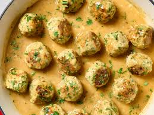

Chicken Meatballs

Garlic Butter Chicken Meatballs
The meatballs are tender and savory, and the sauce is cozy but bright. It's a meal that feels exactly right for this time of year.
Ingredients
- Finely grated zest of 1 medium lemon (about 1 1/2 teaspoons).
- 1/2 cup finely chopped fresh parsley leaves (from 1/2 medium bunch), plus more for serving.
- 1/2 cup panko breadcrumbs.
- 3 teaspoons minced garlic (about 4 cloves), divided.
- 1 large egg.
- 1 1/2 teaspoons kosher salt, divided.
- 1/2 teaspoon dried oregano.
- 1/4 teaspoon freshly ground black pepper.
- 1 1/2 pounds ground chicken.
- 4 tablespoons (1/2 stick) unsalted butter, divided.
- 1 pinch red pepper flakes (optional).
- 2 tablespoons all-purpose flour.
- 1/4 cup dry white wine.
- 1 cup low-sodium chicken broth.
- Juice of 1 medium lemon (about 2 tablespoons).
Steps
- Stir the finely grated zest of 1 medium lemon, 1/2 cup finely chopped fresh parsley leaves, 1/2 cup panko breadcrumbs,1 1/2 teaspoons of the minced garlic, 1 large egg, 1 1/4 teaspoons of the kosher salt, 1/2 teaspoon dried oregano, and 1/4 teaspoon black pepper together in a large bowl.
- Add 1 1/2 pounds ground chicken and mix until evenly combined; do not overmix or the meatballs will be tough. Scoop out the mixture in heaping 2-tablespoon portions (about 20) and roll between damp hands until a smooth ball forms.
- Melt 2 tablespoons of the unsalted butter in a 12-inch frying pan or skillet over medium-high heat. Add the meatballs in a single layer and cook, turning occasionally, until browned and cooked through, and an instant-read thermometer inserted into the center of a meatball registers at least 165°F, about 12 minutes total. Transfer to a clean plate.
- Reduce heat to medium, then melt the remaining 2 tablespoons unsalted butter in the pan. Add the remaining 1 1/2 teaspoons minced garlic and 1 pinch red pepper flakes if desired. Cook until fragrant, about 30 seconds. Sprinkle with 2 tablespoons all-purpose flour and cook, stirring frequently, to remove the raw flour flavor, about 30 seconds.
- Whisk in 1/4 cup dry white wine, then scrape up the browned bits from the bottom of the skillet. Cook until the wine is reduced by half, about 1 minute.
- Whisk in 1 cup low-sodium chicken broth, the juice of 1 medium lemon juice, and the remaining 1/4 teaspoon kosher salt. Bring to a boil. Reduce the heat to maintain a simmer and cook until the sauce is slightly thickened, 2 to 4 minutes. Return the meatballs to the skillet and toss to coat. Garnish with more chopped parsley before serving.